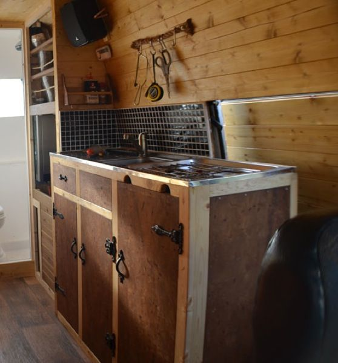
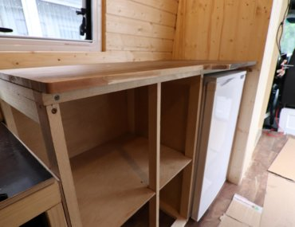

HOW TO BUILD A VAN KITCHEN
As you can tell, I’ve got two cabinets with two drawers, a countertop, sink, backsplash with a little shelf, and a wall on the right side dividing the kitchen area from the driving area. Because of the layout of the van, my bed ends right before the window and it was the perfect space to add in my little kitchen. The cabinet and two drawers on the left are a cabinet set my dad found at a flea market and the cabinet on the right is one I built to match the rest and fill out the space. I will be honest, I got SUPER lucky with this cabinet find because it just fit perfectly into the space and had an extra door that just happened to match. While you could build all the cabinets from scratch to be custom for your van, this will take a long time. I would recommend scouring flea markets and thrift shops to see what you can find.
So if you’re lucky enough to find just about half your cabinets but need to build a custom one for the rest of the space (or want to build them all), you’re in the right place! First things first, decide the size of the cabinets you’ll be building. From there you’ll have to build the sides, bottom shelf (or shelves), and add a door. You won’t need a top for any of your cabinets because you’ll be putting the kitchen counter on top.